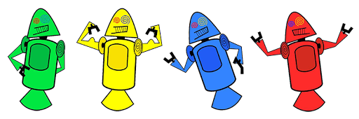

HISTORIA DO MASCOTE ANDROID
Provavelmente você sabe que o sistema operacional Android, Mantido pelo Google é um dos mais utilizados para dispositivos móveis em todo o mundo. Mas talvez você não saiba que o seu simpâtico mascote tem um nome e uma historia muito curiosa? Pois acompanhe este artigo para aprender muita coisa sobre esse robozinho
A PRIMEIRA VERSÃO
A primeira tentativa de criar um mascote surgiu em 2007 e veio de um desenvolvedor chamado Dan Morrilüìé Ele conta que abriu o linkscapeüìé (software livre para vetoriz√ß√£o de imagens) e criou sua pr√≥pria vers√£o do rob√¥. O objetivo era apenas personificar o sistema apenas para sua equipe, n√£o existia nenhuma solicita√ß√£o da empresa para cria√ß√£o de um mascote
Essa primeira versão bizarra até foi batizada em homenagem ao seu criador: seriam os Dandroids.
SURGE UM NOVO MASCOTE
A ideia de ter um mascote foi amadurecendo e a missão foi passada para uma profissional da área. A ilustradora Russa Irina Blok, também funcionária do Google, ficou com a missão de representar o pequeno robô de uma maneira mais agradável.

A ideia principal da Irina era representar tudo graficamente com poucos traços e de forma mais chapada. O desenho também deveria gerar identificação rápida com quem o olha. Surgiu então o Bugdroid, o novo mascote do Android.
.png)
A principal inspiração para os traços do novo Bugdroid veio daqueles bonequinhos que ilustram portas de banheiro para indicar o gênero de cada porta. Conta a lenda que a artista estava criando em sua mesa no escritório do Google e olhou para o lado dos banheiros e a identificação foi imediata: simples, limpo, objetivo.